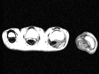

| |
Cada tejido se definirá por tiempo de retorno al nivel de energía basal de relajación longitudinal o T1 y un tiempo de relajación transversal o T2 concreto. Eso quiere decir que en función del tipo de estudio, potenciado en T1 o T2, los tejidos se manifestarán de una manera u otra en la imagen adquirida. |
 |